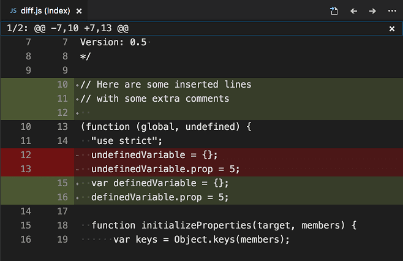
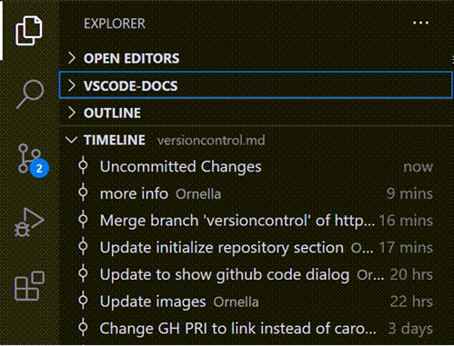
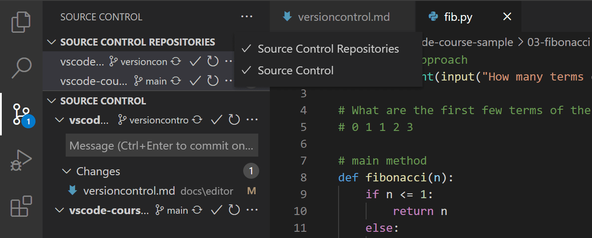

Using Git source control in VS Code
Visual Studio Code has integrated source control management (SCM) and includes Git support out-of-the-box. Many other source control providers are available through extensions on the Visual Studio Marketplace.
With GitHub Copilot in VS Code, you can get suggestions for commit messages, pull requests, and review code changes before committing them. Learn more about GitHub Copilot in VS Code.
If you don't have a Copilot subscription yet, use Copilot for free by signing up for the Copilot Free plan. You'll get a monthly limit of completions and chat interactions.
If you're just getting started with Git, the git-scm website is a good place to start, with a popular online book, Getting Started videos and cheat sheets. The VS Code documentation assumes you are already familiar with Git.
Working in a Git repository
VS Code recognizes when you open a folder that is a Git repository. The Source Control view enables you to perform most of the Git operations without using the command line.
Make sure that Git is installed on your machine. VS Code uses your machine's Git installation (at least version 2.0.0), so you need to install Git first before you get these features.
You can access the Source Control view from the by selecting the Source Control icon in the Activity Bar or by using the G (Windows, Linux Ctrl+Shift+G) keyboard shortcut. If you have changes, the Source Control icon indicates how many changes you currently have in your repository.
The Source Control view shows the details of your current repository changes: CHANGES, STAGED CHANGES and MERGE CHANGES. You can also view the source control graph to see how your changes relate to the repository's history.

When you select a file in the Source Control view, you will see the changes that you have made to that file in a diff editor.
For unstaged changes, the editor on the right still lets you edit the file: feel free to use it!
You can also find indicators of the status of your repository in the bottom-left of the VS Code Status Bar: the current branch, dirty indicators, and the number of incoming and outgoing commits of the current branch. To check out any branch in your repository, select the status indicator and select the Git reference from the list.
You can open VS Code in a sub-directory of a Git repository. VS Code's Git services will still work as usual, showing all changes within the repository, but file changes outside of the scoped directory are shaded with a tool tip indicating they are located outside the current workspace.
Cloning a repository
If you haven't opened a folder yet, the Source Control view will give you the options to Open Folder from your local machine or Clone Repository.

If you select Clone Repository, you will be asked for the URL of the remote repository (for example on GitHub) and the parent directory under which to put the local repository.
For a GitHub repository, you would find the URL from the GitHub Code dialog.

You would then paste that URL into the Git: Clone prompt.

You'll also see the option to Clone from GitHub. Once you authenticate with your GitHub account in VS Code, you'll be able to search through repositories by name, and select any repo to clone it. You can also start the flow to clone a Git repository with the Git: Clone command in the Command Palette (P (Windows, Linux Ctrl+Shift+P)). To see a step-by-step walkthrough, check out our Clone repos from VS Code video.
If you'd like to work on a repository without cloning the contents to your local machine, you can install the GitHub Repositories extension to browse and edit directly on GitHub. You can learn more in the GitHub Repositories extension section.
Initialize a repository
If your workspace is on your local machine, you can enable Git source control by creating a Git repository with the Initialize Repository command. When VS Code doesn't detect an existing Git repository, the Source Control view will give you the options to Initialize Repository or Publish to GitHub.

You can also run the Git: Initialize Repository and Publish to GitHub commands from the Command Palette (P (Windows, Linux Ctrl+Shift+P)).
- Initialize Repository: creates the necessary Git repository metadata files and shows your workspace files as untracked changes ready to be staged.
- Publish to GitHub: directly publishes your workspace folder to a GitHub repository, allowing you to choose between private and public repositories. Check out our publishing repos video for more information about publishing to GitHub.
Commit
Staging (git add) and unstaging (git reset) can be done via contextual actions in the files or by drag-and-drop.
Configure your Git username and email. When you commit, be aware that if your username and/or email is not set in your Git configuration, Git will fall back to using information from your local machine. You can find the details in Git commit information.

You can type a commit message above the changes and press Ctrl+Enter (macOS: +Enter) to commit them. If there are any staged changes, only those changes will be committed. Otherwise, you'll get a prompt asking you to select what changes you'd like to commit and get the option to change your commit settings.
We've found this to be a great workflow. For example, in the earlier screenshot, only the staged changes to overview.png will be included in the commit. Later staging and commit actions could include the changes to versioncontrol.md and the two other .png images as a separate commit.
More specific Commit actions can be found in the Views and More Actions ... menu on the top of the Source Control view.

If you commit your change to the wrong branch, undo your commit using the Git: Undo Last Commit command in the Command Palette (P (Windows, Linux Ctrl+Shift+P)).
Generate a commit message with AI
GitHub Copilot in VS Code can generate a commit message for you, based on the code changes you've made. In the Source Control view, select the Generate Commit Message with Copilot button () in the commit message input box.

If you have specific requirements for your commit message for your organization or project, you can use Copilot custom instructions for generating commit messages. For example, commit messages have a maximum length of 60 chars and should start with a verb in the present tense. Get more details about Copilot custom instructions for generating commit messages.
Author commit messages using an editor
If you don't enter a commit message when committing changes, VS Code opens an editor for the COMMIT_EDITMSG file where you can author the commit message in the editor. After you provide a commit message, either close the editor tab, or select the Accept Commit Message button in the editor toolbar to commit the changes.
To cancel the commit operation, you can either clear the contents of the text editor and close the editor tab, or select the Discard Commit Message button in the editor toolbar.

You can disable this functionality by toggling the git.useEditorAsCommitInput setting. After the setting is changed, you have to restart VS Code for the change to take effect.
To use the same flow for git commit commands executed in the integrated terminal, enable the git.terminalGitEditor setting.
Git blame information
VS Code can show git blame information inline in the editor and in the Status Bar. Hover over the Status Bar item or inline hint to view detailed git blame information.
To enable or disable git blame information, use the Git: Toggle Git Blame Editor Decoration and Git: Toggle Git Blame Status Bar Item commands, or configure these settings:
- git.blame.statusBarItem.enabled (enabled by default)
- git.blame.editorDecoration.enabled
You can customize the format of the message that is shown in the editor and in the Status Bar with the git.blame.editorDecoration.template and git.blame.statusBarItem.template settings. You can use variables for the most common information.
For example, the following template shows the subject of the commit, the author's name, and the author's date relative to now:
{
"git.blame.editorDecoration.template": "${subject}, ${authorName} (${authorDateAgo})"
}
To adjust the color of the editor decoration, use the git.blame.editorDecorationForeground theme color.
Review uncommitted code changes with AI
GitHub Copilot in VS Code can help you review your uncommitted code changes.
-
In the Source Control view, select the Code Review button to start a code review of the uncommitted changes

-
Copilot generates code review comments and suggestions as overlays in the editor
You can also view a list of all code review comments in the Comments panel.
-
You apply or discard suggestions by using the corresponding buttons, or context menu actions in the Comments panel
Get more details about reviewing code changes with Copilot in the GitHub documentation.
Branches and Tags
You can create and checkout branches directly within VS Code through the Git: Create Branch and Git: Checkout to commands in the Command Palette (P (Windows, Linux Ctrl+Shift+P)).
If you run Git: Checkout to, you will see a dropdown list containing all of the branches or tags in the current repository. It will also give you the option to create a new branch if you decide that's a better option, or checkout a branch in detached mode.

The Git: Create Branch command lets you quickly create a new branch. Just provide the name of your new branch and VS Code will create the branch and switch to it. If you choose to Create new branch from..., you'll get an extra prompt that allows you to specify which commit the new branch should be pointing to.
VS Code can automatically save and restore open editors when you switch to another branch. Use the scm.workingSets.enabled setting to enable this feature. To control the open editors when switching to a branch for the first time, you can use the scm.workingSets.default setting.
Worktrees
VS Code has built-in support for Git worktrees, making it easy to manage and work with multiple branches at the same time.
You can disable automatic worktree detection by toggling the git.detectWorktrees setting.
Create a worktree
You can create a new worktree directly from the Source Control Repositories view or by using the Git: Create Worktree command in the Command Palette (P (Windows, Linux Ctrl+Shift+P)).
-
In the Source Control view, select ... > Repositories to open the Source Control Repositories view.
-
Right-click on a repository, and select Worktrees > Create Worktree...
-
Follow the prompts to choose a branch and location for the new worktree.
VS Code creates a new folder for the worktree at the specified location and checks out the selected branch into that folder.
The Source Control Repositories view shows the newly created worktree under its parent repository. VS Code distinguishes between repositories, submodules, and worktrees, showing their relationships for better clarity.
Open a worktree
There are multiple ways to open a worktree:
-
Directly open the folder associated with the worktree in VS Code. VS Code automatically detects that it's a worktree of an existing repository.
-
Right-click the worktree in the Source Control Repositories view and select Open Worktree in New Window or Open Worktree in Current Window.
-
Run the Git: Open Worktree in Current Window or Git: Open Worktree in New Window command in the Command Palette and select the desired worktree.
Manage worktrees
All detected worktrees are shown in the Source Control Repositories view, grouped under their parent repository.
When you select a worktree in the list, the Changes view shows the pending changes for that worktree.
To delete a worktree, right-click it in the list and select Delete Worktree. Alternatively, run the Git: Delete Worktree command in the Command Palette.
Compare and migrate changes from a worktree
When you make changes in a worktree, you can compare those changes with your main workspace and bring worktree changes back into your main repository.
-
In the Source Control view, right-click a changed file in the worktree and select Compare with Workspace to see the differences side-by-side.
-
After reviewing, use the Migrate Worktree Changes... command from the Command Palette to merge all changes from a worktree into your current workspace.
Remotes
Given that your repository is connected to some remote and that your checked out branch has an upstream link to a branch in that remote, VS Code offers you useful actions to push, pull, and sync that branch (the latter will run a pull command followed by a push command). You can find these actions in the Views and More Actions ... menu, along with the option to add or remove a remote.
VS Code is able to periodically fetch changes from your remotes. This enables VS Code to show how many changes your local repository is ahead or behind the remote. This feature is disabled by default and you can use the git.autofetch setting to enable it.
You should set up a credential helper to avoid getting asked for credentials every time VS Code talks to your Git remotes. If you don't do this, you may want to consider disabling automatic fetching via the git.autofetch setting to reduce the number of prompts you get.
Source control graph
When you have a remote repository configured, you can see how many commits you are ahead or behind the remote. The Graph view in the Source Control view shows a graphical representation of the commits that are incoming and outgoing.
The graph contains the current branch, the current branch's upstream branch, and an optional base branch. The root of the graph is the common ancestor of these branches.

The graph provides the following functionality:
- Select an entry to see the files that are changed in that commit. Select the Open Changes action to see the diff of the commit in the editor.
- Right-click on a commit to perform actions such as checkout, cherry-pick, adding it as context to chat, and more.
- Select a file to see the diff of that file in the editor.
Use the actions in the Graph view tool bar to select the branch, fetch, pull, push, and sync changes.
Git Status Bar actions
There is a Synchronize Changes action in the Status Bar, next to the branch indicator, when the current checked out branch has an upstream branch configured. Synchronize Changes will pull remote changes down to your local repository and then push local commits to the upstream branch.

If there is no upstream branch configured and the Git repository has remotes set up, the Publish action is enabled. This will let you publish the current branch to a remote.

If your workspace contains multiple Git repositories, the Status Bar will show the current repository. When you select the Status Bar item, you can choose the behavior of which repository should be active.
Gutter indicators
If you open a folder that is a Git repository and begin making changes, VS Code will add useful annotations to the gutter and to the overview ruler.
- A red triangle indicates where lines have been deleted
- A green bar indicates new added lines
- A blue bar indicates modified lines

Merge conflicts

Merge conflicts are recognized by VS Code. Differences are highlighted and there are inline actions to accept either one or both changes. Once the conflicts are resolved, stage the conflicting file so you can commit those changes.
3-way merge editor
To help you resolve merge conflicts, VS Code provides a 3-way merge editor where you can interactively accept incoming and current changes and view and edit the resulting merged file. The 3-way merge editor is opened by selecting the Resolve in Merge Editor button in the bottom right corner of a file with Git merge conflicts.
The 3-way merge editor displays separate views for Incoming changes (on the left), Current changes (on the right), and the Result of the merge (at the bottom). Conflicts are highlighted and can be resolved by using the CodeLens buttons.

Resolving conflicts
The 3-way merge editor allows you to resolve conflicts by accepting either one or both changes. You can also manually edit the result of the merge.
For some conflicts, the merge editor shows an Accept Combination button. Accepting the combination resolves the current conflict by smartly merging both changes. This is especially useful for changes in the same line that don't touch the same characters.
Use the Ignore buttons to accept neither the incoming nor current change, but mark the conflict as resolved. This resets the conflicting area to the state before any changes were made.
Completing the merge
You can use the conflict counter in the right of the result editor to keep track of how many unresolved conflicts are remaining. Clicking on the counter jumps to the next unresolved conflict. Once all conflicts are resolved, you can complete the merge by selecting Complete Merge in the bottom right corner. This stages the file and closes the merge editor.
Alternative layouts and more
Selecting the three dots () in the top right corner of the merge editor opens a context menu with additional options. You can switch to a vertical layout and display the base view, which shows the state of the file before any changes were made.
The three dots next to Incoming, Current, and Result offer options for each view, such as showing a side-by-side diff against base, accepting all changes, or resetting the result.
Understanding conflicts
If you want to learn more about the details of how 3-way merge editors work, we can recommend the following video:
Viewing diffs
Our Git tooling supports viewing of diffs within VS Code.

The Diff editor has a separate gutter in the middle, which enables you to Stage or Revert changes code blocks. If you select a block of text, you can revert or stage the changes that are included in the selection.

You can diff any two files by first right-clicking on a file in the Explorer view and selecting Select for Compare and then right-click on the second file to compare with and select Compare with Selected. Alternatively, open the Command Palette (P (Windows, Linux Ctrl+Shift+P)), and select ay of the File: Compare commands. Learn more about the different options to compare files in VS Code.
Accessible Diff Viewer
There is an Accessible Diff Viewer in the Diff editor that presents changes in a unified patch format. You can navigate between changes with Go to Next Difference (F7) and Go to Previous Difference (F7 (Windows, Linux Shift+F7)). Lines can be navigated with arrow keys and pressing Enter will jump back in the Diff editor and the selected line.

This experience is especially helpful for screen reader users.
Timeline view
The Timeline view, accessible at the bottom of the File Explorer by default, is a unified view for visualizing time-series events (for example, Git commits) for a file.

VS Code's built-in Git support provides the Git commit history of the specified file. Selecting a commit will open a diff view of the changes introduced by that commit. When you right-click on a commit, you'll get options to Copy Commit ID and Copy Commit Message.
Visual Studio Code supports more Git history workflows through extensions available on the VS Code Marketplace.
Click on an extension tile to read the description and reviews in the Marketplace.
Git output window
You can always peek under the hood to see the Git commands we are using. This is helpful if something strange is happening or if you are just curious. :)
To open the Git output window, run View > Output and select Log (Git) from the dropdown list.
VS Code as Git editor
When you launch VS Code from the command line, you can pass the --wait argument to make the launch command wait until you have closed the new VS Code instance. This can be useful when you configure VS Code as your Git external editor so Git will wait until you close the launched VS Code instance.
Here are the steps to do so:
- Make sure you can run
code --helpfrom the command line and you get help.- if you do not see help, please follow these steps:
- macOS: Select Shell Command: Install 'Code' command in path from the Command Palette.
- Windows: Make sure you selected Add to PATH during the installation.
- Linux: Make sure you installed Code via our new
.debor.rpmpackages.
- if you do not see help, please follow these steps:
- From the command line, run
git config --global core.editor "code --wait"
Now you can run git config --global -e and use VS Code as editor for configuring Git.
VS Code as Git difftool and mergetool
You can use VS Code's diff and merge capabilities even when using Git from command-line. Add the following to your Git configurations to use VS Code as the diff and merge tool:
[diff]
tool = default-difftool
[difftool "default-difftool"]
cmd = code --wait --diff $LOCAL $REMOTE
[merge]
tool = code
[mergetool "code"]
cmd = code --wait --merge $REMOTE $LOCAL $BASE $MERGED
This uses the --diff option that can be passed to VS Code to compare two files side by side. The merge tool will be used the next time Git discovers a merge conflict.
To summarize, here are some examples of where you can use VS Code as the editor:
git rebase HEAD~3 -ido interactive rebase using VS Codegit commituse VS Code for the commit messagegit add -pfollowed by e for interactive addgit difftool <commit>^ <commit>use VS Code as the diff editor for changes
Working with GitHub Pull Requests and Issues
Visual Studio Code can also bring in GitHub's pull requests and issues. Create your PRs in VS Code, review with comments, and approve them without switching context. Learn more about GitHub PRs and Issues in VS Code.
SCM Providers
Click on an extension tile to read the description and reviews in the Marketplace.
VS Code has support for handling multiple Source Control providers simultaneously. For example, you can open multiple Git repositories alongside your Azure DevOps Server local workspace and seamlessly work across your projects. To turn on the Source Control Providers view, select the overflow menu in the Source Control view (G (Windows, Linux Ctrl+Shift+G)), hover over Views, and make sure that Source Control Repositories is marked with a check. The Source Control Providers view shows the detected providers and repositories, and you can scope the display of your changes by selecting a specific provider.

SCM Provider extensions
If you would like to install another SCM provider, you can search on the scm providers extension category in the Extensions view (X (Windows, Linux Ctrl+Shift+X)). Start typing '@ca' and you will see suggestions for extension categories like debuggers and linters. Select @category:"scm providers" to see available SCM providers.

Next steps
-
Intro Video - Git Version Control - An introductory video providing an overview of VS Code Git support.
-
Intro to collaborating on GitHub - Learn how to use GitHub with VS Code.
-
Learn more about Copilot VS Code - Learn about Copilot in VS Code.
-
Source Control API - If you want to integrate another Source Control provider into VS Code, see our Source Control API.